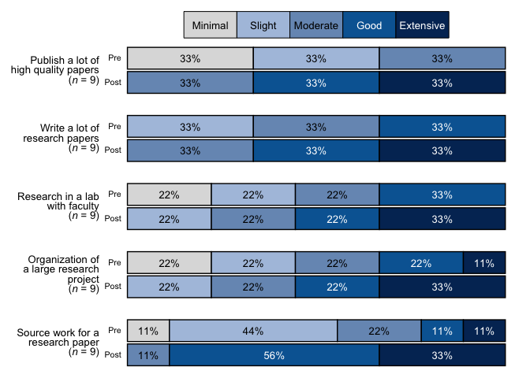

Overview
The goal of blackstone is to make data manipulation, analysis, and visualization easier and faster for Blackstone Research and Evaluation.
blackstone is used to create visuals with Blackstone Research and Evaluation branding and as well as common data cleaning, manipulation and analysis tasks for everyone at Blackstone Research and Evaluation.
Installation
You can install the development version of blackstone from GitHub with the R package pak :
# install.packages("pak")
pak::pak("zwcrowley/blackstone")On the initial installation you will also have to install and import fonts from the extrafont package:
# install.packages("extrafont")
library(extrafont)
# Import fonts to get "Arial", this only has to be done one time, then `blackstone` package will use the code below to load the fonts automatically
# for the functions that require that step:
extrafont::font_import()
# Load all fonts:
extrafont::loadfonts("all", quiet = TRUE)Usage
Here is just one use for blackstone that creates a stacked bar chart of pre-post data:
library(blackstone)
# Example pre-post data:
items <- dplyr::tibble(
pre_Organization = c(1, 2, 3, 4, 5, 4, 3, 2, 1),
post_Organization = dplyr::if_else(pre_Organization < 5, pre_Organization + 1, pre_Organization),
pre_Source = c(2, 2, 3, 5, 4, 3, 2, 1, 2),
post_Source = dplyr::if_else(pre_Source < 4, pre_Source + 2, pre_Source),
pre_Publish = c(1, 1, 1, 2, 2, 2, 3, 3, 3),
post_Publish = pre_Publish + 2,
pre_Write = c(2, 2, 2, 3, 3, 3, 4, 4, 4),
post_Write = pre_Write + 1,
pre_Research = c(1, 1, 2, 2, 3, 3, 4, 4, 4),
post_Research = pre_Research + 1
)
# Set up the named vector to pass to scale_labels, follow this pattern- c("{new label}" = "{original variable name}"):
named_levels_min_ext <- c("Minimal" = "1", "Slight" = "2", "Moderate" = "3", "Good" = "4", "Extensive" = "5")
# Recode numeric variables to factors using `recodeCat()` and select the factor variables:
cat_items <- blackstone::recodeCat(df = items, scale_labels = named_levels_min_ext) %>%
dplyr::select(dplyr::where(is.factor))
# `levels_min_ext` as just the names from `named_levels_min_ext`:
levels_min_ext <- names(named_levels_min_ext)
# Question labels as a named vector with the naming structure like this- c("{new label}" = "{original variable name}"):
question_labels <- c("Publish a lot of high quality papers" = "Publish",
"Write a lot of research papers" = "Write",
"Research in a lab with faculty" = "Research",
"Organization of a large research project" = "Organization",
"Source work for a research paper" = "Source")
# With new labels and order taken from `question_labels` argument, each
# item has it's own sample size in the label (overall_n = FALSE):
blackstone::stackedBarChart(
df = cat_items, pre_post = TRUE, scale_labels = levels_min_ext, overall_n = FALSE,
question_labels = question_labels, question_order = TRUE, percent_label = TRUE
)
See vignettes for more examples of all the functions this package and how they work.
Getting help
More functions and visuals will be added to blackstone package as needed, be sure to reach out with any ideas for the package or issues!
If you encounter a clear bug or need any help with this package, please reach out to Zack Crowley on the Google Chat space titled blackstone R package, direct message, or email at zcrowley@blackstoneevaluation.com.